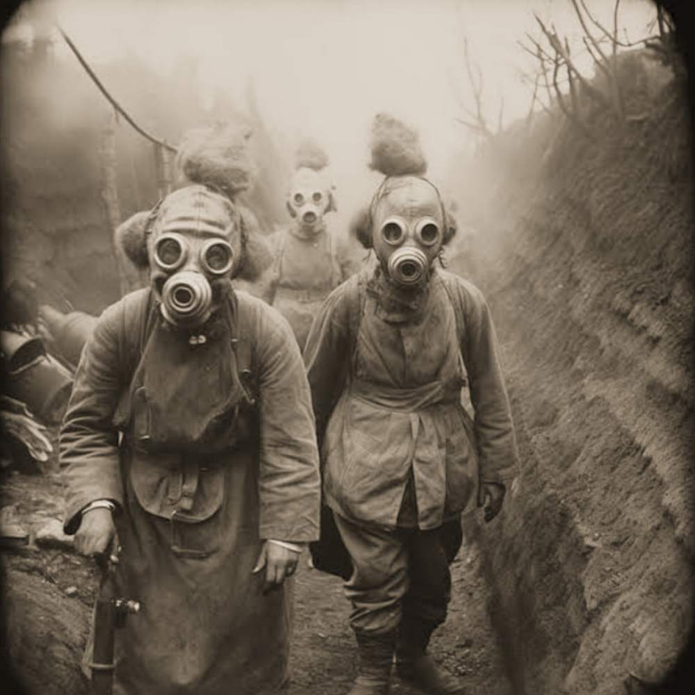

Fim da Primeira
Guerra Mundial
Seg. 11 de Novembro de 1918
Em 11 de novembro de 1918, o mundo testemunhou o fim de um dos conflitos mais sangrentos da história da humanidade: a Primeira Guerra Mundial. Após mais de quatro anos de batalhas, trincheiras, bombardeios e sofrimento, o armistício foi assinado entre os Aliados e o Império Alemão, marcando oficialmente o encerramento da guerra que devastou a Europa e reverberou por todos os continentes.
O acordo de cessar-fogo foi firmado às 5 horas da manhã em um vagão de trem na floresta de Compiègne, na França, e entrou em vigor às 11 horas da manhã do mesmo dia. Esse momento ficou conhecido como "a décima primeira hora do décimo primeiro dia do décimo primeiro mês".
As Causas de um Conflito Mundial
A Primeira Guerra Mundial teve início em 28 de julho de 1914, após o assassinato do arquiduque Franz Ferdinand da Áustria-Hungria em Sarajevo. O evento desencadeou uma reação em cadeia de alianças políticas e militares, envolvendo inicialmente as potências centrais (Alemanha, Áustria-Hungria e Império Otomano) contra os Aliados (França, Reino Unido, Rússia, posteriormente Estados Unidos e outros).
O conflito marcou o uso em larga escala de tecnologias militares modernas — metralhadoras, artilharia pesada, tanques, gás tóxico e aviação — causando uma destruição nunca antes vista.
Um Saldo Devastador
Estima-se que a Primeira Guerra Mundial tenha causado a morte de cerca de 17 milhões de pessoas, entre civis e militares, sendo aproximadamente:
10 milhões de soldados mortos
7 milhões de civis mortos
Mais de 21 milhões de feridos
Além disso, milhões sofreram amputações, traumas psicológicos profundos e foram deslocados de suas terras. A guerra também foi o estopim para mudanças geopolíticas radicais: impérios foram dissolvidos (Austro-Húngaro, Otomano, Russo e Alemão), revoluções ocorreram, como a russa de 1917, e o mundo entrou em uma nova e frágil ordem internacional.
O Mundo Pós-Guerra
Apesar do armistício em 1918, a paz definitiva só foi estabelecida com a assinatura do Tratado de Versalhes, em 28 de junho de 1919. O tratado impôs duras sanções à Alemanha, consideradas por muitos historiadores como um dos fatores que levariam, duas décadas depois, à eclosão da Segunda Guerra Mundial.
O fim da Primeira Guerra Mundial marcou não apenas o encerramento de um conflito, mas o fim de uma era. Os anos seguintes seriam de reconstrução, luto e transformação, com uma geração marcada pelas cicatrizes da guerra.